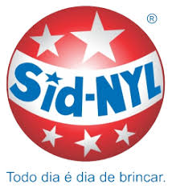

A Gerdau é uma das maiores empresas de aço do mundo, com mais de 120 anos de tradição e inovação no setor. Atuando em 10 países, a Gerdau transforma o aço para construir um futuro mais sustentável, oferecendo soluções que vão desde a construção civil até a indústria automotiva e o setor de energia.
 1.png)
A Engemix é uma das maiores fornecedoras de concreto no Brasil, comprometida em oferecer soluções de alta qualidade para construção civil. Com tecnologia avançada e uma ampla rede de usinas, a Engemix atende projetos de todos os portes, garantindo resistência, durabilidade e sustentabilidade em suas soluções.
 1.png)
A General Motors (GM) é uma das líderes globais no setor automotivo, reconhecida por sua inovação e compromisso com a mobilidade sustentável. Com marcas icônicas como Chevrolet, Cadillac e GMC, a GM desenvolve veículos que combinam tecnologia avançada, design e segurança para atender a diferentes estilos de vida.

A Suzano Papel e Celulose é uma das maiores produtoras de papel e celulose de eucalipto do mundo, conhecida por sua atuação sustentável e inovadora no setor. Com foco em práticas ambientais responsáveis, a Suzano transforma recursos renováveis em soluções que vão desde papel para o dia a dia até bioprodutos que substituem o plástico.

A Divisystem é especializada em soluções para divisórias e sistemas de ambientes corporativos e industriais. Reconhecida pela qualidade e inovação, a empresa oferece produtos como divisórias, forros e biombos que se adaptam às necessidades específicas de cada espaço, promovendo organização, privacidade e estética.

A Embu S/A é uma das principais empresas de mineração e fornecimento de agregados no Brasil, reconhecida pela qualidade de seus produtos para a construção civil. Com décadas de experiência, a Embu S/A oferece materiais essenciais como brita, areia e pedra, atendendo projetos de infraestrutura, pavimentação e edificações de todos os portes.

A Ibirá Mangueiras Termoplásticas é líder na produção de mangueiras e dutos flexíveis para diversos setores, incluindo industrial, agrícola e automotivo. Com expertise em tecnologia de materiais, a empresa oferece soluções de alta qualidade, durabilidade e eficiência, projetadas para suportar condições exigentes.

Sid-Nyl é especializada na produção de artefatos de nylon e plásticos técnicos, oferecendo soluções robustas e de alta precisão para a indústria. Com uma linha completa de produtos como buchas, engrenagens e peças técnicas, a Sid-Nyl é reconhecida pela durabilidade e qualidade de seus materiais, que suportam condições exigentes e garantem performance superior.

O Grupo Kallas é uma empresa brasileira que atua em diversas áreas, incluindo o comércio de produtos químicos e serviços de logística e distribuição. Com um compromisso firme com a qualidade e a sustentabilidade, o grupo oferece soluções personalizadas que atendem às necessidades específicas de seus clientes em setores como indústria, agricultura e saúde.

A Marfrig é uma das maiores empresas de alimentos do Brasil e um dos principais produtores de carne bovina do mundo. Com um forte compromisso com a qualidade e a sustentabilidade, a Marfrig oferece uma ampla gama de produtos, desde cortes de carne até soluções alimentícias para o varejo e a indústria.

A Amanco Wavin é uma empresa líder no setor de tubos e conexões, reconhecida pela inovação em soluções de infraestrutura e saneamento. Com um forte compromisso com a sustentabilidade, a Amanco Wavin oferece produtos de alta qualidade para sistemas hidráulicos, de esgoto e drenagem, atendendo às necessidades de construção residencial, comercial e industrial.